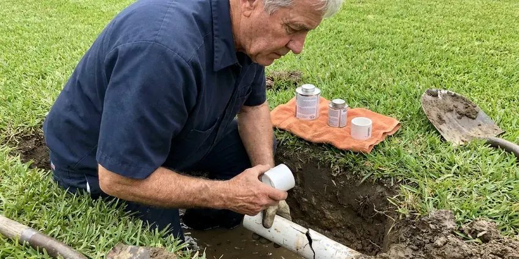

Hydrojet Plumbing in Redondo Beach, CA
Dealing with recurring clogs in Redondo Beach, CA? Hydrojet plumbing from FKM Plumbing uses high-pressure water to clear your pipes effectively.
- Before & After Camera Video
- Advanced Technology
- Chemical-Free Methods
- Certified Technicians

Need Hydrojet Plumbing Service in Redondo Beach, CA?
We clean the full pipe diameter, not just a path through the clog.
Skilled Hydrojet Plumbing in Redondo Beach, CA for Clear Drains
FKM Plumbing specializes in hydrojet plumbing, a powerful and precise method for clearing the toughest drain and sewer line blockages. Using high-pressure water streams, we reliably remove grease, mineral buildup, tree roots, and other debris that common snaking tools can't touch, ensuring a thorough clean for your Redondo Beach property.
Our expertise includes:
- Remove heavy grease and sludge buildup.
- Restore full diameter to pipes clogged by scale.
- Root-cutting, penetrating and rotating nozzles chosen for each pipe

Additional Plumbing Maintenance Services in Redondo Beach, CA
Our maintenance and specialty plumbing services in Redondo Beach, CA catch small problems before they become emergencies.


Customers
Why Choose FKM Plumbing for Hydrojet Plumbing in Redondo Beach, CA?
We match pressure and flow to the pipe in front of us, so we clean thoroughly without risking damage. You see camera footage of the result, not just our word.
- Chemical Free, We use only water, which is safe for your pipes, septic system and the surrounding environment.
- Safe for Pipes, When performed by a professional, hydrojetting is safe for most modern plumbing systems and materials.
- Wall-to-Wall Cleaning, Jetting scours the entire inside of the pipe, removing grease and scale that cause recurring clogs.
Citywide Coverage
FKM Plumbing is dedicated to serving every neighborhood within Redondo Beach and its surrounding areas. We make sure that no matter where you are located, our expert hydrojet plumbing services are just a phone call away.
Experienced Team
The FKM Plumbing team brings years of expertise to every hydrojet plumbing job, ensuring a safe and effective cleaning process. We use diagnostic tools to pinpoint the exact location and nature of the clog before starting work.
Safety-First Approach
We make sure all hydrojet plumbing services are performed with care for both your plumbing system and the environment. Our methods are designed to be effective while minimizing any potential risks or disruptions to your Redondo Beach property.
Trusted Certified Redondo Beach Plumbing Services Professionals
At FKM Plumbing, we take pride in providing certified plumbing services throughout Redondo Beach, CA. Backed by leading industry credentials, our experienced plumbers combine technical skill with genuine customer care. Whether it is repair, installation, or maintenance, we follow strict safety and quality standards to deliver lasting results you can trust.
Call Us Now PHCC Plumbing Contractor Recognition
PHCC Plumbing Contractor Recognition Better Business Bureau (BBB) Accreditation
Better Business Bureau (BBB) Accreditation Angi Certified Pro
Angi Certified Pro ISO 9001 Quality Management Certification
ISO 9001 Quality Management CertificationProven Hydrojet Plumbing Services in Redondo Beach, CA
Hard Water Scale Removal in Redondo Beach, CA
Hard water can lead to significant mineral scale buildup inside pipes over time, reducing flow and creating rough surfaces where other debris can snag. Municipal water across much of Southern California is hard, leaving chalky scale on faucets, showerheads, and inside water heater tanks. Our hydrojet plumbing service is highly effective at blasting away stubborn calcium and magnesium scale. By restoring the inner diameter of your pipes, we improve drainage and prevent future clogs caused by mineral accumulation. This is particularly important for homes with aging galvanized or cast iron pipes in Redondo Beach.

Commercial Hydrojet Plumbing in Redondo Beach, CA
Businesses in Redondo Beach, CA frequently face challenges with their plumbing systems due to higher usage and specific waste types. Our commercial hydrojet plumbing service is equipped to handle large-scale blockages common in restaurants, retail spaces, and industrial facilities. We reliably remove fats, oils and grease, food debris, and other commercial waste, preventing costly downtime and keeping your business running smoothly. We can often schedule these services during off-peak hours to minimize disruption.
Kitchen Grease Line Jetting in Redondo Beach
Kitchen drains collect grease that cools and hardens along the pipe wall, especially in long horizontal runs under floors and slabs. Snaking clears a path, but the grease soon builds back. Jetting with a rotating nozzle peels that layer off and flushes it downstream. Homeowners who cook often and restaurants benefit most from regular kitchen line jetting.
Sewer Camera Inspection Before Hydrojetting in Redondo Beach
Before performing any hydrojet plumbing in Redondo Beach, FKM Plumbing usually conducts a thorough sewer camera inspection. This allows us to accurately diagnose the type, location, and severity of the blockage, as well as assess the condition of your pipes. Knowing if there is existing damage like cracks or collapses helps us determine the appropriate pressure and nozzle, ensuring the hydrojetting process is safe and effective, especially for lines under older slabs and foundations.
Commercial and Restaurant Hydrojetting in Redondo Beach
Restaurants, hotels, apartment complexes and shopping centers rely on drains that handle heavy daily volume. We jet kitchen lines, floor drains and lines to grease interceptors to keep them flowing between pump-outs. Scheduled jetting helps businesses avoid backups during busy hours and stay in good standing with local pretreatment rules. We can work after closing to avoid disruption.
Emergency Hydrojet Service in Redondo Beach
A sewage backup into a tub or floor drain needs fast attention. Our technicians respond quickly, clear the immediate blockage and then jet the line to keep it from coming right back. We camera the line once it is clear so you know whether the cause was buildup or a broken pipe. That way your emergency call also gives you a plan.
Main Sewer Line Hydrojetting in Redondo Beach
The main sewer line is critical to your home's plumbing system, and blockages here can cause significant issues throughout your property in Redondo Beach. Our hydrojetting service thoroughly clears main sewer lines of tree root intrusions, accumulated debris, and severe clogs that can lead to backups. We often perform a camera inspection first to identify the exact cause and location of the blockage, ensuring precise and effective cleaning.

Tree Root Removal with Hydrojetting in Redondo Beach
Tree roots are a common problem for sewer lines in Redondo Beach, particularly with older homes and mature landscaping. Roots seek out moisture and can enter even tiny cracks, growing into dense masses that cause severe blockages and damage. Our hydrojet plumbing service uses specialized root-cutting nozzles to slice through these stubborn intrusions and wash them away, leaving your sewer line clear. This method is often more effective than traditional augers for complete root removal.
Expert Hydrojet Plumbing Near Me in Redondo Beach, CA
FKM Plumbing is your trusted local expert for hydrojet plumbing throughout Redondo Beach, CA. We understand the plumbing challenges faced by properties in our community, from mineral scale to soil movement affecting sewer lines. Call us for effective, lasting drain cleaning solutions.
When searching for hydrojet plumbing near me in Redondo Beach, CA, look no further than FKM Plumbing. Our local team is focused on providing fast and effective service to all residents and businesses. We pride ourselves on understanding the plumbing challenges faced by properties in our area.
FKM Plumbing at a Glance
- Licensed and insured plumbers serving Redondo Beach, CA
- Same-day appointments and 24/7 emergency response
- Upfront, flat-rate pricing before work begins
- 4.8-star rated by 754+ Southern California customers
Redondo Beach Map
Redondo Beach Information
- Population
- 67,749
- Area codes
- 310/424/323
- Service area
- Redondo Beach and communities within 40 miles
- Nearby
- Torrance, Hawthorne, Inglewood, Carson
Mineral scale inside drain lines and roots in old sewer joints both restrict flow in Redondo Beach, CA homes, so hydrojetting is one of the most effective ways to restore full flow. Most homes in Southern California sit on concrete slabs, so slab leaks often show up as warm floors, wet carpet, or an unexplained jump in the water bill.
Expert Services
Trust our professionals for reliable FKM Plumbing solutions in Redondo Beach, CA.
Our Specialized Plumbing Services in Redondo Beach, CA
At FKM Plumbing, we provide a complete range of plumbing services across Redondo Beach, CA. From leak detection to full system installations, our team ensures fast, precise, and affordable service for both residential and commercial properties. Explore our core services below:


How Our Hydrojet Plumbing Process Works in Redondo Beach, CA
Our hydrojet plumbing process is designed for maximum effectiveness and minimal disruption to your home or business.
Request a Quote
Call (213) 871-0701 and describe your drain problem and how often it recurs. We schedule a visit and give you jetting pricing in advance.
Camera Inspection
We run a camera through the line to check pipe condition and locate the blockage. Then we choose the right nozzle and pressure for your pipe.
Jet and Verify
We jet the line from end to end and flush the debris. A follow-up camera pass shows you the clean pipe before we leave.
Frequently Asked Questions About Hydrojet Plumbing in Redondo Beach
Residential hydrojetting in Redondo Beach typically costs $400 to $900, including a camera inspection. Commercial lines, long runs or heavy root intrusion can cost $800 to $2,000 or more. We give you a clear price after reviewing the line.
For most homes, hydrojetting every year or two is enough for preventive maintenance, especially in areas with hard water or older plumbing. Businesses, particularly those in food service, may benefit from more frequent cleanings, such as quarterly or every six months, to prevent serious blockages.
Repeat clogs, slow drains throughout the house, gurgling sounds and sewer odors all suggest buildup in the line. Kitchens that back up every few months are a telltale sign of grease. A camera inspection confirms whether jetting is the right fix.
FKM Plumbing utilizes professional hydrojetting equipment from reputable manufacturers known for their power and reliability, such as Spartan Tool and MyTana. These professional-grade machines ensure we can deliver high quality, effective drain cleaning services for our clients in Redondo Beach.
When performed by a trained professional, hydrojetting is usually safe for most types of pipes, including older cast iron or PVC. However, severely damaged, corroded, or fragile pipes might not withstand the high pressure. This is why FKM Plumbing always recommends a pre-service camera inspection to assess pipe integrity before proceeding with hydrojet plumbing.
Jetting removes the roots inside the pipe, but roots will grow back if the joint or crack remains open. Regular jetting can control them for years. Pipe lining or repair is the lasting fix.
Most homes only need jetting every few years or when clogs recur. Restaurants and busy commercial kitchens usually benefit from jetting every three to six months. We recommend a schedule based on what the camera reveals.
Yes. Chemicals rarely remove scale or roots and can damage pipes and septic systems. Jetting uses only water and cleans the full pipe diameter.
What People Are Saying About Our Plumbing Experts?

Patricia H.
We had a slab leak that two other companies could not find. FKM Plumbing located it in under an hour, explained our options, and the price matched the quote to the dollar.
Slab Leak Repair · Los Angeles, CA
James P.
Our commercial plumbing system had a leak under the sink, and FKM Plumbing handled it professionally. The plumbers arrived quickly and restored everything without disruption to our customers.
Commercial Plumbing · Inglewood, CA
Sofia M.
Two new toilets installed in one visit, no mess left behind, and the tech even adjusted a faucet he noticed was dripping. Fair pricing and really friendly.
Toilet Installation · Carson, CA
Emily R.
I called FKM Plumbing for plumbing repair, and the technician was fast, polite, and thorough. They explained the problem clearly and fixed it the same day. I will definitely hire them again. Highly recommended!
Plumbing Repair · Hawthorne, CA
Mark T.
When our office needed drain cleaning, FKM Plumbing provided quick, reliable service. The plumber arrived on time and made sure every drain flowed perfectly before leaving. Very satisfied.
Drain Cleaning · Compton, CARobert G.
The trenchless sewer replacement saved our front yard. They walked us through the camera inspection footage first so we knew exactly what we were paying for.
Sewer Line Replacement · Inglewood, CA